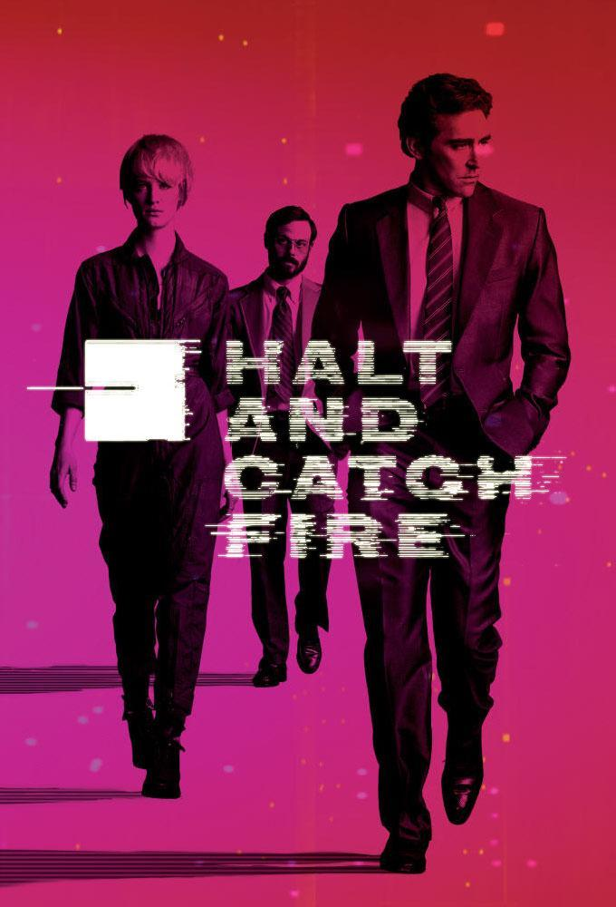

Un vistazo a cada episodio de la primer temporada.

La primera temporada se centra en el intento de Cardiff Electric de crear un clon del IBM PC. Joe MacMillan lidera el proyecto, reclutando a Gordon Clark y Cameron Howe. La temporada explora los desafíos técnicos, las luchas de poder y los sacrificios personales involucrados en la innovación.
Episodio 1: Entrada y salida (I/O)
Episodio 2: Miedo, incertidumbre y duda (FUD)
Episodio 3: Hardware de altas llanuras (High Plains Hardware)